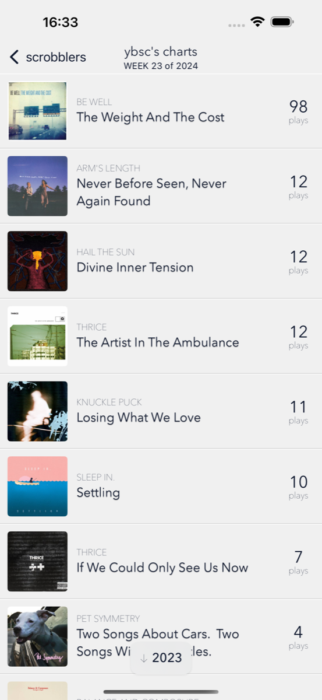
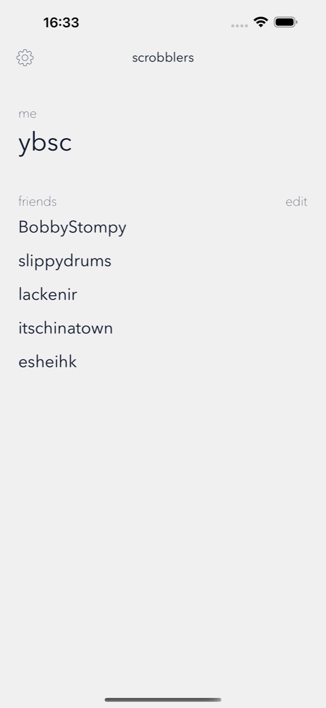
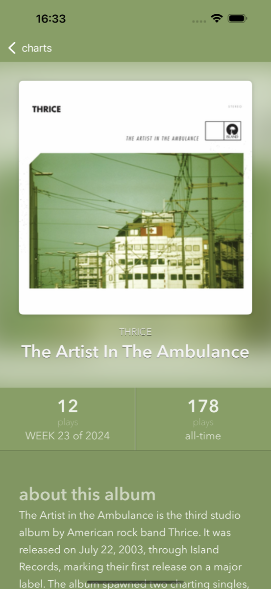

"What albums were my friends and I listening to last year?"


- View your weekly album charts from exactly one year ago
- Navigate between years with intuitive overscroll gestures
- See detailed play counts and album information
- Add friends and import from Last.fm
- Browse their listening history
- Discover music and reminisce together


- Explore detailed album information
- See your all-time and weekly play counts
- Beautiful dominant color backgrounds
What do you need to get started?
- Your active Last.fm username
- An iPhone with iOS 18+
- A free copy of Vinylogue!